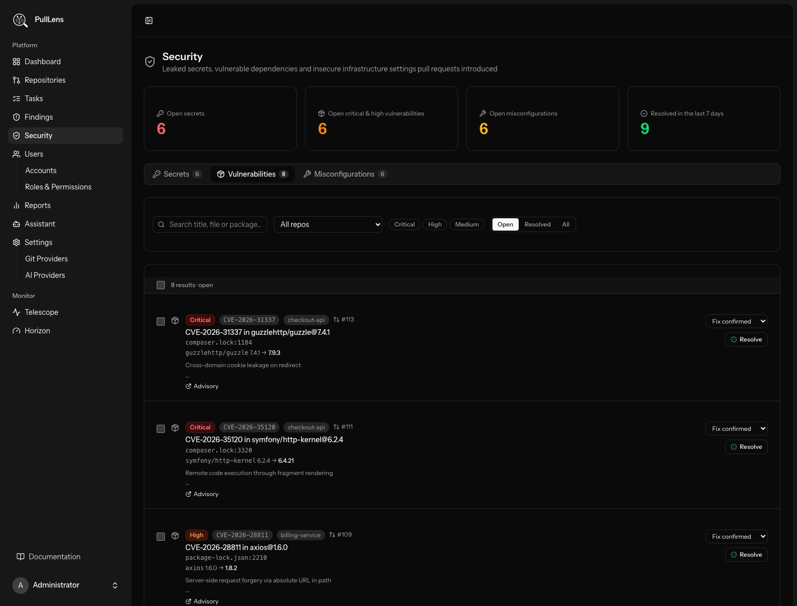
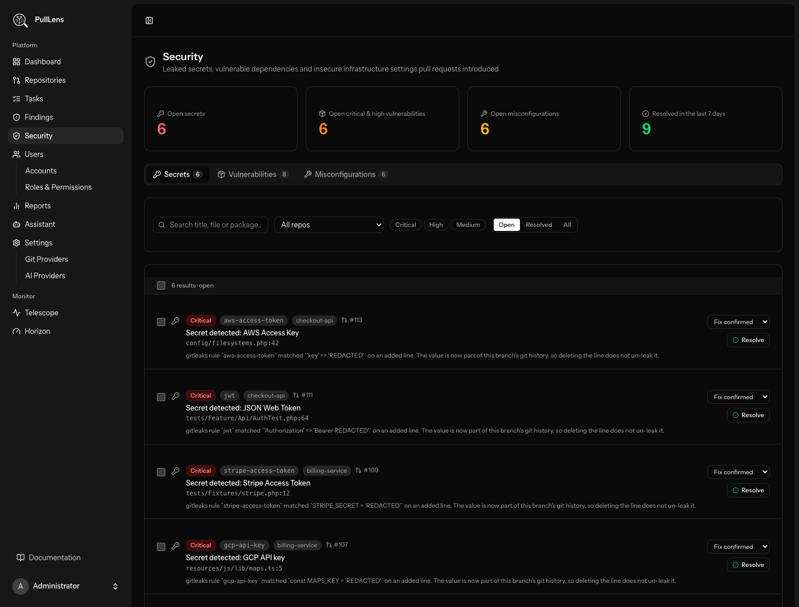
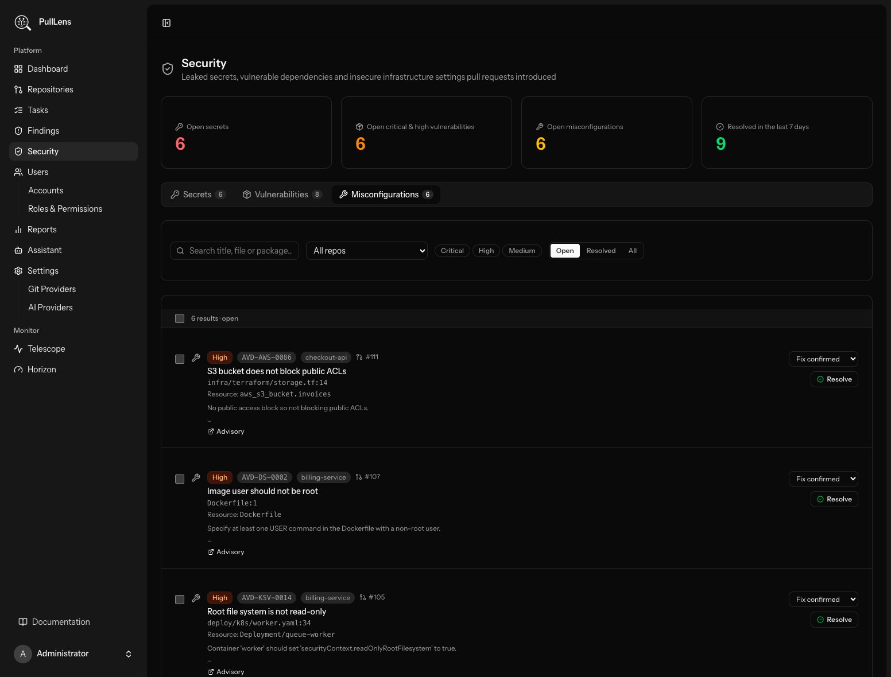

Security
Leaked secrets, vulnerable dependencies and insecure infrastructure settings, kept apart from the AI review findings.

What it shows
The Security page, under Findings in the sidebar, lists everything PullLens's free scanners found: secrets from gitleaks, and vulnerable dependencies and misconfigurations from Trivy. The Findings page keeps to the AI code review. Anyone who can see Findings can see Security, limited to the repositories they have access to.
The summary tiles
| Tile | Counts |
|---|---|
| Open secrets | Unresolved leaked credentials. |
| Open critical & high vulnerabilities | Unresolved dependency vulnerabilities rated critical or high. |
| Open misconfigurations | Unresolved insecure settings in Dockerfiles, Kubernetes, Helm, Terraform, CloudFormation and ARM files. |
| Resolved in the last 7 days | Security findings closed - by a person or by a later push - this week. |
The tiles follow the repository filter only, so narrowing the list by severity or status does not change them.
Tabs
| Tab | Extra detail on each row |
|---|---|
| Secrets | The gitleaks rule. The value itself is always redacted. |
| Vulnerabilities | The package, the installed version → the first fixed version, and a link to the advisory. |
| Misconfigurations | The Trivy check ID and the resource it applies to, with a link to the check. |


Filters and actions
Filter by repository, severity, status (open by default) and a search over the title, file and package. Resolve a row with the same reasons as on Findings - false positive, won't fix and acknowledged keep it closed on later pushes; fix submitted and fix confirmed reopen it if the same problem is still in the diff.
When a tab is empty
An empty tab either means nothing was found, or that the scanner behind it is off for every repository you can see - the page says which, and links to the repositories so you can turn it on under Security in a repository's settings.